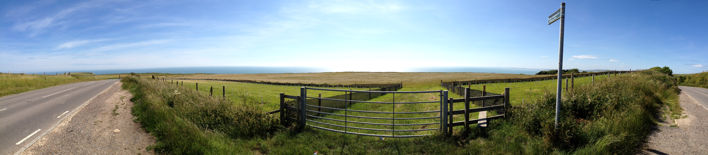

You can find an expanded version of my C.V. here.
Published journal papers:
Papers presented at international conferences:
Pending journal papers:
Industry reports:
Awards and grants:
Lecturer in Geographic Data Science, University College London, London, UK (2020-2021)
PhD in Geography and Computer Science, University of Southampton, UK (2015-2020)
Research Assistant (Public Health Analysis), University of Southampton, UK (2016-2017)
GIS Analyst, British Red Cross and Médecins Sans Frontières UK, UK (2013-2015)
GIS Consultant, Oil Spill Response Joint Industry Project, UK (2013-2015)
Research Intern, Ordnance Survey, UK (2012)
Technical Development Intern, Oil Spill Response Ltd, UK (2011)
PhD in Geography, School of Geography and the Environment, University of Southampton (2015-2020)
MSc in Geographical Information Management, Cranfield University (2012-2013)
BA in Geography, St. Peter’s College, University of Oxford (2008-2011)